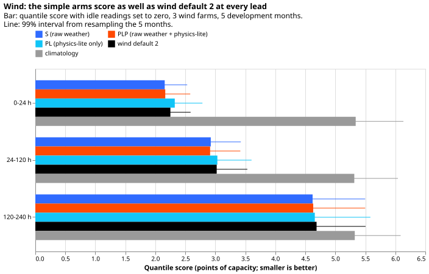
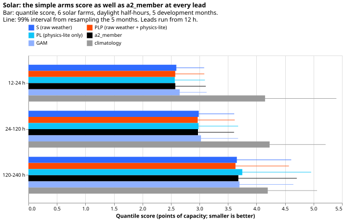
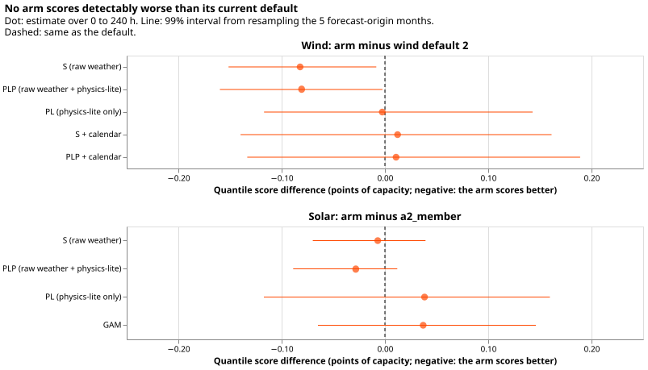
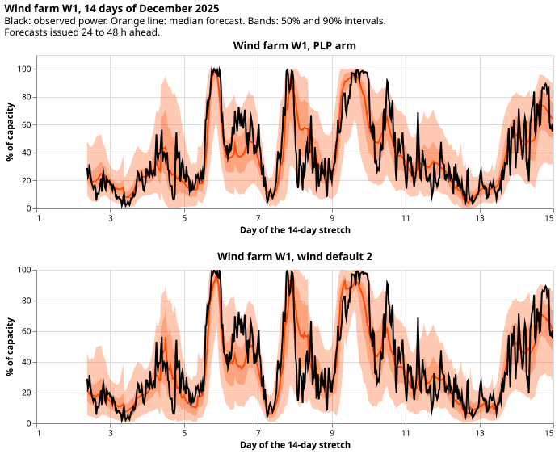
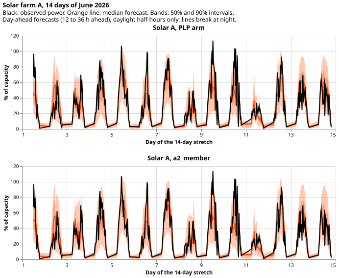

Does one simple pooled network, with or without a fixed physics-lite power input, forecast the 3 metered wind farms and the 6 metered solar farms as well as the current defaults?
A small network that sees only the average and spread of the weather forecasts scores no worse than
the two current defaults for the 3 wind farms and the 6 solar farms, and a hand-written power curve
as an extra input adds little. The two current defaults are wind default 2 and solar a2_member
(experiment 615's stored forecasts), each with a physics-based plant model and an elaborate neural
network. We asked whether those parts are needed. We trained one small neural network per
technology, shared by all farms of that technology. The network reads summaries across the 51 members
of the ECMWF ensemble weather forecast, and we scored it on 5 development months (forecast origins
in October, December, January, March, and June). The final test (valid times from 2026-07-01) was
never read. "No worse" means the 99% interval of the score difference lies below 0.15 points of
capacity for wind and 0.10 points for solar. Nothing here is adopted for production. The forecasts
are stored in the private data folder, and the generators appear only as W1 to W3 and Solar A to
Solar F.
Terms. The quantile score is the mean pinball loss over 11 quantile levels, in points of capacity
(smaller is better). The tables also give the normalised mean absolute error of the median forecast
(MAE). Arms: S reads the mean and standard deviation across members of the raw weather. PLP
(physics-lite power plus raw weather) reads S plus the mean and standard deviation of a fixed
physics-lite power: a power curve for wind, and an irradiance-and-cell-temperature formula for solar,
computed from each of the 51 members separately. PL reads the physics-lite power only. The GAM is
the generalised additive model of experiment 615, and climatology is a forecast from the farm's
own past power. The q05-q95 coverage is the share of observations between the 5% and 95% quantiles
(0.90 is ideal). Intervals resample the 5 forecast-origin months, so they are wide and fragile.
Wind leads run from 0.5 to 240 h and solar leads from 12 to 240 h. Wind scores treat idle readings
(the idle mask of experiment 210) as zero ("idle-zeroed rows"); "kept rows" drops them and "all rows"
leaves them as observed.
Results

Look at the S and PLP bars sitting at or just below the wind default 2 bar in every lead band, and
climatology far above all of them. The differences are small compared with the intervals.
| Wind arm (idle readings as zero) | Quantile score | Median MAE (% of capacity) | q05-q95 coverage | Above q99 | Below q01 |
|---|---|---|---|---|---|
| S | 3.684 | 13.64 | 0.911 | 0.0175 | 0.0050 |
| PLP | 3.685 | 13.66 | 0.903 | 0.0162 | 0.0056 |
| PL | 3.764 | 13.97 | 0.923 | 0.0147 | 0.0051 |
| S plus calendar | 3.778 | 14.00 | 0.894 | 0.0239 | 0.0055 |
| PLP plus calendar | 3.777 | 13.95 | 0.889 | 0.0215 | 0.0061 |
| Wind default 2 | 3.766 | 13.90 | 0.835 | 0.0106 | 0.0226 |
| Wind default 2, 730-day capacity | 3.766 | 13.90 | 0.835 | 0.0111 | 0.0225 |
climatology (193,699 kept rows only) |
5.322 | 20.15 | 0.929 | 0.0167 | 0.0021 |
Wind S is no worse than wind default 2 and scores 0.082 points better on idle-zeroed rows (99% interval -0.151 to -0.008, minimum detectable effect 0.103), but most of that gap comes from the default. PLP gives -0.081 (-0.160 to -0.002) and PL gives -0.003 (-0.117 to 0.143). The default's score is 3.713 on all rows and 3.766 on idle-zeroed rows, so zeroing the idle readings worsens the default by 0.053 points; S moves by under 0.01. The default's band is too narrow once idle readings count as zero (q05-q95 coverage 0.835, and 0.0226 of observations below its q01). On all rows the S minus default difference is -0.036 (-0.087 to 0.020), and on kept rows it is +0.019 (-0.018 to 0.066), with S scoring 3.865 and the default 3.846. The idle-zeroed intervals that exclude zero are sensitive to the resampling seed: the upper bound of S minus default is -0.008 or +0.005 depending on the seed (-0.003 by enumerating all 3,125 resamples), and the upper bound of PLP minus default is -0.002 or +0.009 (+0.002 by enumeration). Only 4 of the 5 months favour S; December 2025 favours the default. The idle mask missed 51% to 69% of idle periods out of sample (experiment 210), so some idle noise stays in the "zero" rows.

Look at the S, PLP, and a2_member bars being close in every lead band, with the GAM slightly
higher and climatology far higher. PL is clearly worse than PLP at 120 to 240 h (3.750 against
3.631).
| Solar arm | Quantile score | Median MAE (% of capacity) | q05-q95 coverage | Above q99 | Below q01 |
|---|---|---|---|---|---|
| S | 3.301 | 12.51 | 0.881 | 0.0140 | 0.0092 |
| PLP | 3.279 | 12.42 | 0.888 | 0.0136 | 0.0101 |
| PL | 3.346 | 12.70 | 0.892 | 0.0120 | 0.0063 |
a2_member, quarterly refit |
3.308 | 12.55 | 0.886 | 0.0154 | 0.0111 |
a2_member, 730-day capacity |
3.305 | 12.51 | 0.887 | 0.0153 | 0.0087 |
| GAM | 3.345 | 12.49 | 0.895 | 0.0132 | 0.0106 |
climatology |
4.208 | 16.24 | 0.950 | 0.0013 | 0.0148 |
Solar PLP is no worse than a2_member (-0.028 points, 99% interval -0.089 to 0.012), and is 0.021
points better than S (-0.044 to -0.004, minimum detectable effect 0.026). The PLP minus
a2_member interval includes zero, so only the PLP minus S contrast excludes it. S is level with
a2_member (-0.007, -0.070 to 0.039). PL is 0.038 worse than a2_member (-0.117 to 0.160).

Look at every interval including zero: no arm is detectably better or worse than its default over the 5 months, apart from the narrow wind S and PLP intervals discussed above.
Calendar columns hurt wind. S plus calendar scores 0.094 points worse than S (0.012 to 0.180), and its upper tail is worse (0.024 of observations above q99, against a target of 0.01).
Refit schedule (wind S, lower priority). Fitting the wind S arm once at the first development month, quarterly, or twice monthly gives 3.697, 3.697, and 3.684 points on idle-zeroed rows. Each less frequent schedule is 0.013 points worse than twice monthly (single: -0.004 to 0.027; quarterly: -0.011 to 0.055), so the intervals include zero. Both scores are within the 0.15 threshold of wind default 2 (single: -0.069, -0.124 to 0.004).
Capacity. Recomputing capacity as the 99.9th percentile of the previous 730 days changes wind
default 2 by -0.001 points and a2_member by -0.002 (interval -0.045 to 0.028). In the one stored
set of wind refits, the 730-day capacity was 2.4%, 6.1%, and 9.5% above the old capacity for W1, W2,
and W3. Solar farm E had 571 calendar days of history at the first refit, with readings on 488 dates.
Tails. Very sunny days are still the weak point: on 27 farm-days reaching 90% of the farm's own
monthly 95th percentile on at least half their half-hours (2,086 rows, a proxy built from observed
power), 10.6% to 12.7% of observations exceed q99 for every simple arm and 11.7% for a2_member with
quarterly refit (coverage 0.66; the 730-day a2_member row gives 12.2%). On the 44 high-wind days
(at least 2 of 3 farms above 80% of capacity, kept rows), coverage is 0.82 for S and 0.83 for wind
default 2, and 4.4% to 5.2% of observations exceed q99. On kept rows, coverage in January and March
is 0.88 to 0.89 for S, against 0.855 and 0.867 for the default. Two-constant tail widening
(experiment 499's rule, fitted on earlier months) did not improve any arm: scores moved by at most
0.013 points except solar climatology (improved by 0.014), and it left more observations below
q01 because exact zeros fall below a lifted q01. For solar, widening roughly doubled the share of
observations above q99 (see Checks).

Look at the PLP median following the black observation about as closely as wind default 2's.

Look at the observed peaks of days 9 and 10 poking above the 90% band for both arms.
Checks
- Predictions P1 to P5 (written before any new forecast was scored):
- P1 passed: wind S is within 0.15 points of wind default 2.
- P2 failed: PLP is not 0.05 points better than S for wind (+0.001), and for solar it is 0.021 better.
- P3 passed: PL is within 0.1 points of PLP for wind (+0.079) and solar (+0.067).
- P4 failed, with the wrong sign: replacing idle readings by zero raised the default's score (worse) by 0.053 points and left the new arms within 0.01, instead of lowering every score by 0.1 points.
- P5 passed: the 730-day capacity moved both defaults by under 0.01 points.
- Median minus mean forecast, per site: not computed, because the mixture mean is not stored with the quantiles. Treat this as a gap.
- Error of the median forecast beside each contrast: it points the same way as the quantile
score for wind S against the default (-0.257 points of MAE, interval -0.541 to 0.066; score -0.082),
and for solar PLP against
a2_member(-0.130, -0.420 to 0.051; score -0.028). The MAE intervals include zero, so the median alone does not separate the arms from the defaults. - Audit triggers (the ml-experiment skill's list of reasons to run an independent audit): trigger 2 (a prediction failed with no tested explanation) fired, because P2 and P4 contradicted the predictions. No audit has been run, so the P4 explanation (the default's band is too narrow on zeroed rows) is untested. The other triggers did not fire.
- Gate: experiment 347's own head reproduced to 0.00000, and
a2_memberseed 0 for the 2026-06 refit reproduced experiment 430's stored forecast to a maximum absolute difference of 0.0 on q01, q50, and q99. - Experiment C is the re-score of both defaults with the 730-day capacity (see Capacity above).
- Widening artefact: the widened rule shrinks q01 towards the median on rows where the median
is near zero, so exact-zero observations fall below q01. The widened scores
(
scores/*_tails.csv) are therefore not a fair tail comparison. - Reviews: fresh Sonnet agents reviewed the wind and the solar scripts before the first quoted score (four wind findings were fixed), then the numbers and the prose and figures of this page. Their findings are applied above. There was no Opus review.
Method
Architecture
- Each arm is a pooled network of two hidden layers of 64 units with a three-component Gaussian
mixture over power as a fraction of capacity. It is the
MixtureHeadof experiment 310, with 11 quantiles read from the mixture and capped at capacity. - Wind inputs: mean and standard deviation across the 51 members of 10 m and 100 m wind speed, the sine and cosine of the 100 m direction, and air temperature, plus the lead (sine and cosine of its hour of day, and hundreds of hours) and a one-hot wind-farm column.
- Solar inputs: mean and standard deviation of shortwave, air temperature, and 10 m wind speed, the
ensemble means of relative humidity, longwave radiation, precipitation, and surface pressure, the
sun's elevation, the sine and cosine of its azimuth, and the lead. There is no farm column, as
in
a2_member, and no calendar column. - The mixture's centre is the mean physics-lite power for PL and PLP and the training mean of the target for S, so S has no physics-lite input anywhere.
- Physics-lite wind: a cubic rise of 100 m wind speed from cut-in 3 m/s to rated 12 m/s, flat to cut-out
25 m/s, zero above, with unit capacity. Physics-lite solar: irradiance over 1000 W/m2 times
(1 - 0.004 per kelvin times (cell temperature - 25 C)), clipped to 0 to 1, with the Faiman cell
temperature
T_air + G / (25 + 6.84 times wind speed). Both are applied to each member before the mean and spread. The solar arms also read the mean and spread of the cell temperature.
Training regime
- Weather is the ECMWF 51-member ensemble forecast (an issued forecast, available at forecast time). Wind trains on the daily 00 UTC runs from 2024-04 and solar on the stored runs of experiment 430.
- Wind refits on day 0 and day 14 of each development month (10 refits), training on runs before 62 days earlier and stopping early on the last 62 days, 40 epochs. Solar refits at 2025-09, 2025-12, 2026-03, and 2026-06 (as in experiment 430), 20 epochs, stopping on the last 61 days.
- Capacity is the 99.9th percentile of the farm's power over the 730 days before each refit. Wind idle readings are set to zero in training and scoring. Three seeds per arm, averaged quantile by quantile.
- AdamW, learning rate 0.002, batch 2048, weight decay 0.0001. A wind fit took about 43 s on the GPU and a solar fit about 14 s. All arms and re-scores took about 2.2 GPU-hours (wind 150 fits, solar 36, wind re-score 20, solar re-score 12, and the 12 schedule fits). A final-test refit of one arm per technology would take about 20 minutes for wind (10 refits, 3 seeds) and under a minute per solar refit.
Measurement
- Scores are on the rows of experiment 615 (daylight half-hours for solar), wind leads of 0.5 to
240 h and solar leads of 12 to 240 h, in points of the same scoring capacity as experiment 615.
Wind default 2 is the stored refits of experiment 615 (old capacity rule) and
a2_memberis experiment 430's stored quarterly forecast, seeds averaged. - Intervals are 99% intervals from 10,000 resamples of the 5 forecast-origin months; the minimum detectable effect is 3.418 times the bootstrap standard error. No Bonferroni correction is applied to the 99% level beyond that choice, and the contrasts are descriptive.
- Experiment C refits wind default 2 (seeds 0 and 1) and
a2_member(seeds 0 to 2) with the 730-day capacity, keeping scoring capacity fixed. - Not done: the estimate of cost in money, and the Opus review the brief allows.
Files
ml-experiments/00659-*/e00659_wind_features.py: builds each wind case's member summaries intodata/ml-experiments/00659-*/wind_features/.e00659_solar_wind.py: rebuilds the solar member arrays with 10 m wind speed intosolar_wind/.e00659_wind_fit.pyande00659_solar_fit.py: fit the arms and writewind_fits/,wind_fits_single/,wind_fits_quarterly/,solar_fits/, andmodels/(state files).e00659_defaults_730.py: the gates and Experiment C refits, intowind_default2_730/andsolar_a2_member_730/.e00659_assemble.py,e00659_score.py,e00659_figures.py,e00659_export.py: tables,scores/*.csv, the figures beside this page, andbacktest_export_simple_shared_wind_solar_2026-11-09/.- Read, not written: experiment 615's
wind_members/,wind_inputs/,wind_default2/,tables/(experiment 615), experiment 430'smember_arrays/and stored forecasts, and00453-*/work/series.parquet.